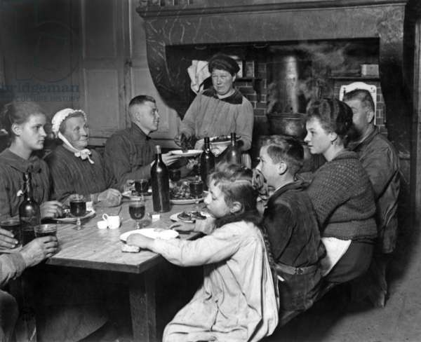

Benvenuti nel cuore della cucina tradizionale, dove il profumo di storia e amore si mescola con il sapore autentico delle ricette della nonna. In questo ricettario, vi invitiamo a fare un viaggio nel tempo e a scoprire i segreti culinari tramandati di generazione in generazione.
Le ricette della nonna sono un inno alla semplicità, alla genuinità e alla passione per la cucina. Ogni piatto racconta una storia, una memoria, un momento condiviso intorno a un tavolo imbandito.
Prendete un grembiule, tirate fuori le pentole e preparatevi a cucinare con l'amore e la dedizione che solo le nonne sanno trasmettere. Buon appetito!
n.b. Abbiamo appena aperto il sito quindi per ora le ricette non sono molte!
Le prime ricette che vi proponiamo sono:
- tiramisu della nonna - pizzoccheri della nonna - canederli della nonna